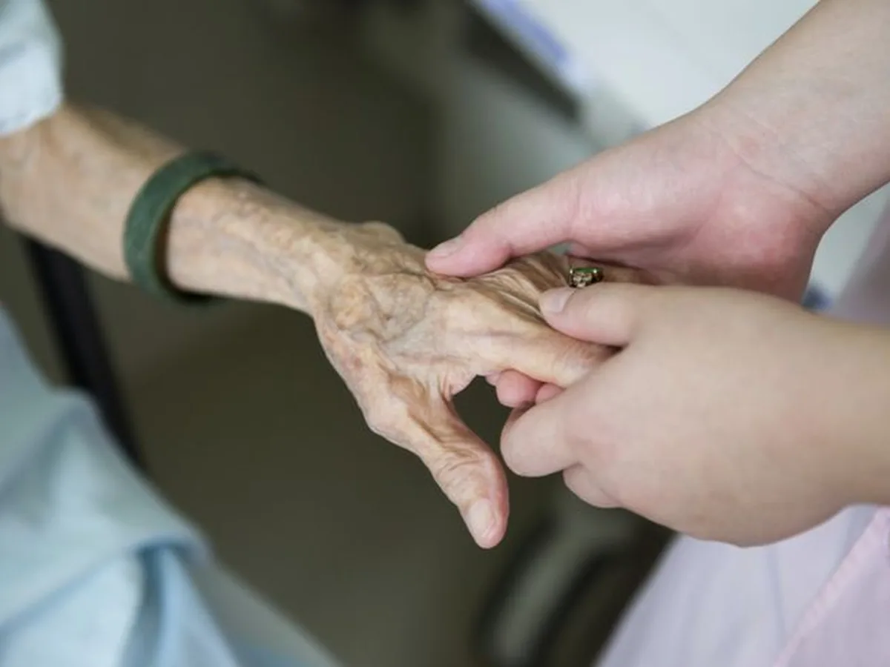

Consulta Geriátrica
Avaliação ampla: funcionalidade, cognição, humor, sono, nutrição, quedas e medicações.
Geriatria e Medicina Integrada para quem quer viver mais e melhor: prevenção, diagnóstico preciso, revisão de medicações, plano individualizado e acompanhamento contínuo.
Cuidamos do envelhecimento com estratégia: reduzir riscos, manter autonomia, melhorar energia, mobilidade, cognição e bem-estar — com um plano integrado e acompanhamento.

A geriatria vai muito além de tratar doenças. É a medicina que organiza o cuidado de forma global, considerando funcionalidade, fragilidade, memória, humor, sono, nutrição, quedas, dor, medicações e o contexto familiar.
Integra pilares de estilo de vida com medicina baseada em evidências. É sobre criar consistência com um plano simples de executar — monitorado e ajustado ao longo do tempo.
Um ecossistema de cuidado para longevidade: diagnóstico, prevenção e acompanhamento. Tudo com foco em autonomia e segurança.
Avaliação ampla: funcionalidade, cognição, humor, sono, nutrição, quedas e medicações.
Estratégia personalizada com metas, rotinas, exames, rastreios e acompanhamento contínuo.
Polifarmácia, interações, efeitos adversos, simplificação do esquema e segurança.
Insônia, apneia, sono fragmentado, higiene do sono e alinhamento do ritmo circadiano.
Glicemia, pressão, colesterol, inflamação, composição corporal e prevenção cardiovascular.
Equilíbrio, força, visão, ambiente e medicações — com plano prático de prevenção.
Plano alimentar realista, com foco em proteína, saciedade, microbiota e saúde óssea.
Estratégia de força, massa muscular e funcionalidade para envelhecer com autonomia.
Triagem, avaliação e plano: memória, atenção, humor, sono e fatores reversíveis.
Exames e rastreios por risco/idade: menos excesso, mais precisão e acompanhamento.
Ansiedade, depressão, luto, propósito e estresse — integrados ao plano clínico.
Acompanhamento, ajustes do plano e educação em saúde ao longo do tempo.
Quer transformar isso em uma lista com preços/planos? É só me mandar o que você oferece (presencial/online, duração, pacotes).
Um método em etapas, com objetivo claro: reduzir riscos e manter performance física e mental.
História completa, exames, estilo de vida, funcionalidade, cognição, sono, medicações e riscos.
Metas objetivas (força, peso, sono, glicemia, pressão, memória, energia) e prioridades.
Rotina prática: nutrição, treino, sono, manejo do estresse, medicações e suplementação segura.
Acompanhamento (presencial/online), indicadores e ajustes para manter o plano vivo.
O que mais move resultado no longo prazo.
Proteína adequada, qualidade, regularidade e estratégia metabólica.
Contra sarcopenia e fragilidade. Força = autonomia.
Recuperação, memória, hormônios, inflamação e energia.
Estresse, humor, propósito e hábitos com consistência.
Card único — pronto para receber a foto PNG (sem fundo) da dona da clínica e todas as informações (CRM, especialidades e descrição).
Atendimento humanizado, foco em longevidade e plano individualizado. Troque este texto pela apresentação real, incluindo experiência, forma de atendimento e diferenciais.
*Troque WhatsApp/CRM/Especialidades assim que tiver os dados finais.Troque pelos depoimentos reais (ou remova se preferir).
“Saí com um plano claro e fácil de seguir. Melhorou meu sono e minha disposição em poucas semanas.”
“Revisamos as medicações e reduzi efeitos colaterais que eu achava ‘normais’. Mudou minha rotina.”
“Plano de força e equilíbrio: parei de ter medo de cair. Estou mais confiante e ativo.”
Respostas diretas para acelerar a decisão.
Uma clínica forte educa. Aqui estão temas que você pode transformar em posts/artigos.
O básico bem feito: sono, força, proteína, pressão, glicemia, social e propósito.
Como revisar medicações com segurança e reduzir efeitos colaterais.
O que realmente importa para osteopenia/osteoporose: força, vitamina D, proteína, quedas.
Sono, audição, visão, pressão, atividade física e estímulo cognitivo.
Treino de força é o “remédio” mais subestimado para autonomia.
Rotinas simples e sustentáveis para acalmar o sistema e melhorar energia.
Troque os dados abaixo pelos oficiais da clínica.
Horário: Seg–Sex 08:00–18:00 • Sáb 08:00–12:00
Endereço: (Rua, número, bairro, cidade)
Telefone/WhatsApp: (00) 00000-0000
E-mail: contato@longevite.com.br
Dica: o botão de WhatsApp no modal está com número placeholder (5500000000000).